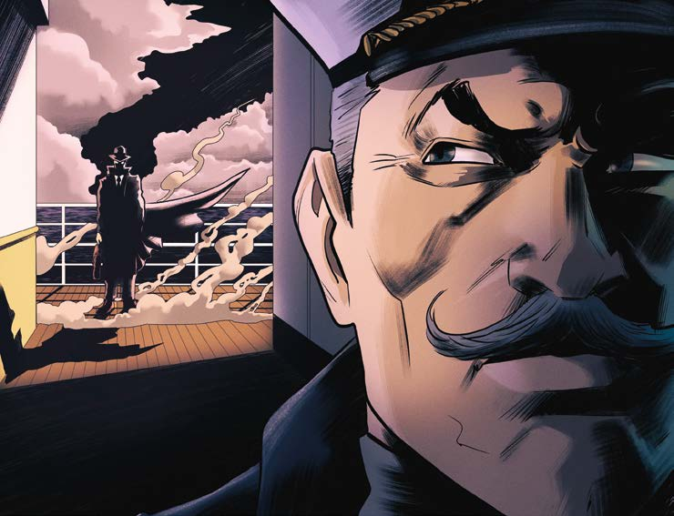

en este viaje.
Al principio pensé que me quería embaucar o algo así, pero me dio un par de explicaciones irrefutables.
Y me habló de ese instituto.
Venía del futuro, porque habían descubierto la manera de trasladarse en el tiempo, algo secreto, secretísimo, para que no cayera en malas manos.
En definitiva, la misión del instituto y de esos viajes era